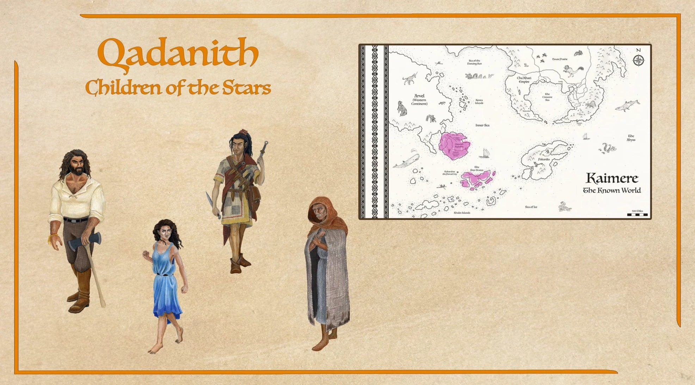
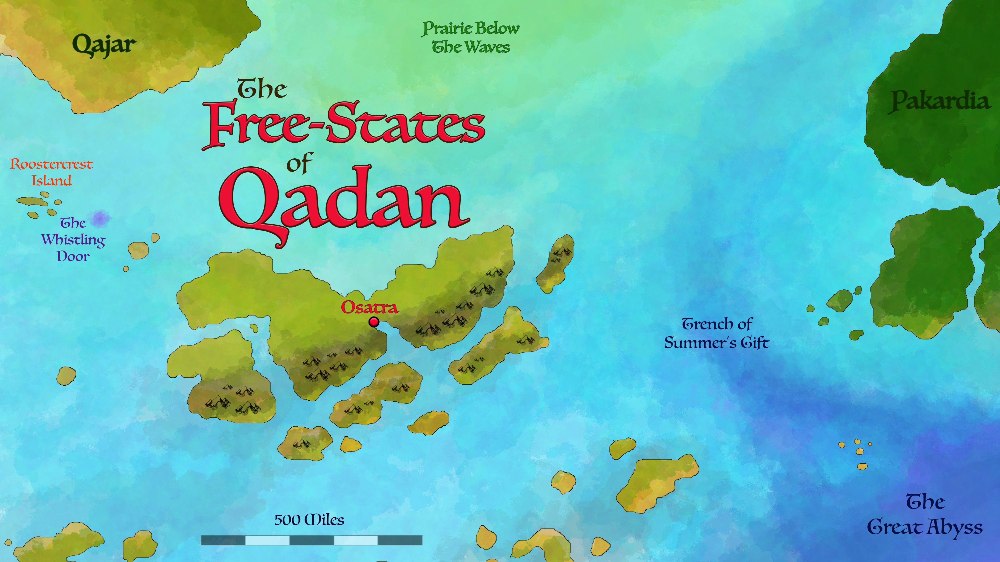
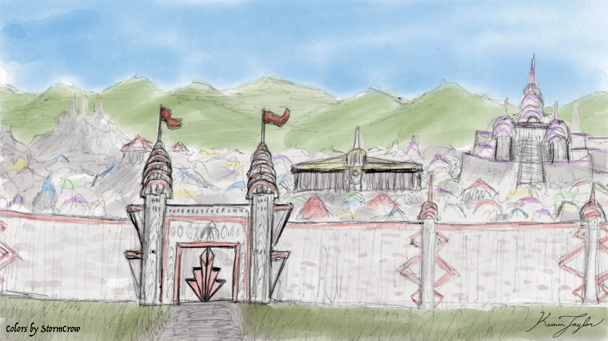
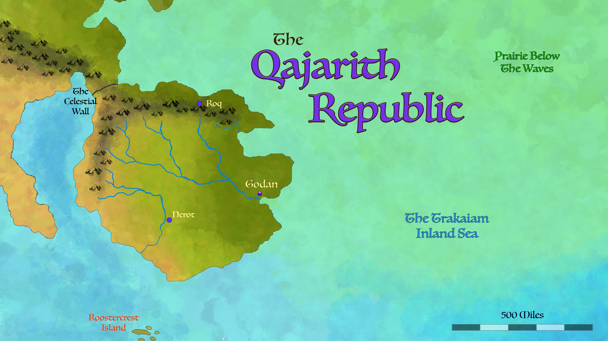

01 · INTRODUCTION
Overview

The Qadanith, traditionally known as the Children of the Stars, are one of the major cultural groupings of the Known World of Kaimere. Their historical homeland lies within the Qadanith Archipelago of the Khalin Sea and the adjoining Qajarith Peninsula. Although they share a broad cultural identity and a common mythological tradition, the Qadanith are politically divided between two major societies: the maritime Free-States of Qadan and the mainland Republic of Qajarith.
The name Children of the Stars derives from a creation myth in which the Qadanith are said to have originated as stardust that fell from the heavens, while other Kaimerans were formed from the clay of the world. This tradition establishes a distinction between celestial and terrestrial origins, providing the Qadanith with a powerful symbolic account of their identity. The stars represent more than a distant place of origin. Within the associated religious traditions, the heavens are connected with ancestry, continuity, and the persistence of the dead within the spiritual life of the living. This celestial orientation is particularly apparent among the Qajarith, whose religious outlook places considerable emphasis on ancestral memory, the moral significance of the natural world, and the relationship between the living and those who came before them. The Free-States have developed their own regional customs and beliefs, but the broader name continues to connect both populations to a shared mythic inheritance.
Geographically, the principal Qadanith populations occupy two closely connected but distinct environments. The Free-States are centered upon Qadan, the largest island of the Qadanith Archipelago in the Khalin Sea, together with numerous surrounding islands and maritime territories. Their prosperity rests upon shipping, commercial exchange, manufacturing, and the administration of a confederation of partially self-governing states. Their capital, Osatra, is among the oldest and most consequential cities in Kaimere. Qajar, meanwhile, occupies a peninsula whose fertile river valleys, productive plains, and natural defensive boundaries have supported a dense agricultural population for millennia. Although the two societies are connected through commerce and politics, their geographical circumstances have encouraged different historical trajectories. The Free-States became outward-facing intermediaries linking distant peoples, while the Qajarith developed a more territorially concentrated civilization whose political traditions emerged from prolonged rivalry between local powers.
The Qadanith have exerted an influence upon the Known World disproportionate to their geographical extent. Their commercial institutions connect communities that would otherwise remain separated by distance, regional conflict, and different economic systems. The language associated with Qadanith commerce has become the principal trade language of the Known World and is spoken by Kaimerans across ethnic and political boundaries. Through this shared means of communication, merchants, diplomats, officials, and travelers can conduct business between societies whose local languages may be mutually unintelligible. Qadanith commerce has also helped provide the wealth and imported materials that support the development of other major powers, including the Cha'Khati Empire and the Pakardiant Confederacy. Their influence is therefore expressed not only through territorial possessions but through the networks of exchange upon which much of modern Kaimeran civilization depends.
Despite these shared connections, the Qadanith are internally diverse and cannot be understood through a single description of their values or institutions. The Free-States combine mercantile pragmatism with entrenched oligarchic power, and their openness to commerce coexists with pronounced social inequalities and controversial traditions. Qajarith society places greater emphasis upon honor, household responsibility, civic obligation, and the preservation of established customs, although its modern republican institutions have introduced new tensions over centralized government and foreign commercial influence. Their differences are especially apparent in their political histories and customary law. The Free-States retain a confederated system dominated by powerful commercial and noble families, whereas the Qajarith Republic attempts to balance regional autonomy with a centralized Senate. The identity of the Children of the Stars is therefore best understood as a common cultural inheritance expressed through two substantially different societies.
02 · THE MYTHS AND RELICS
Origins and Cultural Identity
The Qadanith creation myth distinguishes their ancestry from that of other Kaimerans by describing them as children of the heavens. Whereas other peoples are said to have been formed from the clay of the world, the Qadanith are described as the descendants of stardust that fell from the sky. The significance of this distinction is cultural rather than simply genealogical. It gives the Qadanith an account of collective identity that emphasizes their relationship with the celestial realm, while reinforcing a sense of continuity between the origins of their people and the moral order of the universe. Among the Qajarith, the symbolism of the stars is closely connected with ancestors and the persistence of memory after death. Celestial imagery thus provides a means of linking an individual's life to the history of a household and the larger community. The dead are remembered not merely as people who once existed, but as figures whose choices and experiences continue to influence the conduct of the living.
The degree to which this creation tradition shapes everyday life varies across Qadanith society. Among the Qajarith, religious and philosophical traditions frequently connect the stars with ancestry, personal duty, and the persistence of the past within the present. The Qajarith understanding of the world also encompasses the spiritual significance of animals, forests, seasons, and the work through which communities sustain themselves. The sacred is not necessarily confined to temples or formal ceremonies; it can be encountered through family heirlooms, inherited crafts, household customs, and the remembrance of departed relatives. The Free-States possess their own histories and regional traditions, including those associated with their ancient maritime settlements. Their commercial orientation has brought them into sustained contact with diverse religious and cultural systems, producing societies in which shared ancestry can coexist with considerable local variation.
Qadanith identity is also reinforced by language. The Qadanith trade language is used throughout the Known World as a common means of conducting commerce and communication between different ethnic groups. Its importance extends beyond the markets and ports of the Free-States. Merchants require it to negotiate prices and contracts, diplomats use it to communicate between governments, and travelers rely upon it when moving through regions where they do not know the local language. Its widespread use has made it one of the most consequential cultural exports of Qadanith civilization. The language connects people who may have little else in common, allowing participation in broader trade networks without requiring the abandonment of local languages or identities. This linguistic influence is among the clearest demonstrations of how Qadanith power can operate through shared institutions and practical necessity rather than territorial conquest.
Long before the modern Free-States and Republic of Qajarith emerged, the regions associated with the Qadanith contained communities with their own local rulers, alliances, and political interests. The Qajarith Peninsula in particular remained divided among counties, noble domains, fortified settlements, and independent lordships for thousands of years. Relations between these powers shifted continually between warfare, commerce, raiding, and temporary cooperation. Political consolidation did not erase these identities. Instead, modern Qadanith institutions developed upon older regional traditions that continue to influence political loyalties, religious practice, and attitudes toward authority. The contemporary Qadanith therefore inherit not one unified historical experience but a network of overlapping memories and cultural affiliations.
03 · THE OLIGARCHS
The Free-States of Qadan

The Free-States of Qadan constitute one of the most historically consequential and commercially influential societies in the Known World. Centered upon Qadan, the largest island of the Qadanith Archipelago, the confederation consists of twenty-eight partially self-governing states known as Kaibah, together with additional territories whose administration reflects the complicated balance between local autonomy and shared political interests. The Free-States do not operate as a conventional monarchy or as a centralized nation governed by a single ruling dynasty. Instead, their institutions are shaped by the negotiations of powerful noble families, mercantile interests, and regional authorities. The oligarchs of the constituent states convene in Osatra, where the senate debates legislation, foreign relations, and matters affecting the confederation as a whole. Three executive leaders, known as the Triarchs, are selected through this political system. Although particular families have historically exercised disproportionate influence, the confederation's political identity rests upon the continued participation of its constituent states rather than the hereditary rule of a single dynasty.
The Free-States' maritime orientation has allowed them to develop commercial relationships extending across much of the Known World. Their ships carry commodities between island settlements, mainland ports, and the territories of other major powers. Through these networks, the Free-States distribute agricultural produce, manufactured goods, materials, and finished products that many smaller settlements cannot produce economically for themselves. Osatran goods in particular have become central to the wider economy. Its mills, distilleries, refineries, and other industrial establishments process both local commodities and imported raw materials into products suitable for domestic use and export. These industries remain relatively modest when compared with the later industrial systems of Earth, but within Kaimere they occupy an exceptional position. The relatively slow maturation and long lifespans of Kaimerans limit population growth and the concentration of labor required for extensive mechanized production. The Free-States, however, possess sufficiently large urban populations and extensive commercial connections to sustain manufacturing at a scale unusual elsewhere in the Known World.
The political strength of the Free-States is inseparable from the influence of their oligarchs. These families control major commercial interests, exercise authority within individual Kaibah, and participate in the institutions that regulate trade and diplomacy. Their wealth provides substantial advantages in political negotiations, allowing some families to maintain influence across several generations of leadership. Although the confederation can coordinate policy across a broad area, its system also creates a persistent tension between collective governance and the private interests of powerful houses. Regions considered too valuable to fall under the exclusive control of one family may be administered through special arrangements, while commercial and political rivalries influence the selection of leaders. The Free-States' prosperity has strengthened their institutions, but it has also encouraged their ruling families to preserve a political order from which they benefit.
Despite their mercantile reputation, the Free-States should not be confused with a society in which commercial opportunity produces equal standing for all inhabitants. Political power remains concentrated among wealthy families and established interests, while access to citizenship and its associated privileges varies among different populations. The treatment of humans from Earth is a particularly troubling example. Although slavery has been outlawed in Osatra and most of the Free-States, many Earth-born residents of the capital remain noncitizens, poorly paid, and segregated into labor camps. Their labor contributes to the operation of the city's manufacturing sector without providing them with the same political or social standing enjoyed by recognized citizens. The Free-States therefore combine cosmopolitan commerce and extensive international contact with deeply entrenched inequalities. Their influence has helped connect the Known World, but the benefits of that interconnected economy are not shared equally by everyone who sustains it.
05 · THE Port City
Osatra and the Mercantile Age

The Free-States of Qadan constitute one of the most historically consequential and commercially influential societies in the Known World. Centered upon Qadan, the largest island of the Qadanith Archipelago, the confederation consists of twenty-eight partially self-governing states known as Kaibah, together with additional territories whose administration reflects the complicated balance between local autonomy and shared political interests. The Free-States do not operate as a conventional monarchy or as a centralized nation governed by a single ruling dynasty. Instead, their institutions are shaped by the negotiations of powerful noble families, mercantile interests, and regional authorities. The oligarchs of the constituent states convene in Osatra, where the senate debates legislation, foreign relations, and matters affecting the confederation as a whole. Three executive leaders, known as the Triarchs, are selected through this political system. Although particular families have historically exercised disproportionate influence, the confederation's political identity rests upon the continued participation of its constituent states rather than the hereditary rule of a single dynasty.
The Free-States' maritime orientation has allowed them to develop commercial relationships extending across much of the Known World. Their ships carry commodities between island settlements, mainland ports, and the territories of other major powers. Through these networks, the Free-States distribute agricultural produce, manufactured goods, materials, and finished products that many smaller settlements cannot produce economically for themselves. Osatran goods in particular have become central to the wider economy. Its mills, distilleries, refineries, and other industrial establishments process both local commodities and imported raw materials into products suitable for domestic use and export. These industries remain relatively modest when compared with the later industrial systems of Earth, but within Kaimere they occupy an exceptional position. The relatively slow maturation and long lifespans of Kaimerans limit population growth and the concentration of labor required for extensive mechanized production. The Free-States, however, possess sufficiently large urban populations and extensive commercial connections to sustain manufacturing at a scale unusual elsewhere in the Known World.
The political strength of the Free-States is inseparable from the influence of their oligarchs. These families control major commercial interests, exercise authority within individual Kaibah, and participate in the institutions that regulate trade and diplomacy. Their wealth provides substantial advantages in political negotiations, allowing some families to maintain influence across several generations of leadership. Although the confederation can coordinate policy across a broad area, its system also creates a persistent tension between collective governance and the private interests of powerful houses. Regions considered too valuable to fall under the exclusive control of one family may be administered through special arrangements, while commercial and political rivalries influence the selection of leaders. The Free-States' prosperity has strengthened their institutions, but it has also encouraged their ruling families to preserve a political order from which they benefit.
Despite their mercantile reputation, the Free-States should not be confused with a society in which commercial opportunity produces equal standing for all inhabitants. Political power remains concentrated among wealthy families and established interests, while access to citizenship and its associated privileges varies among different populations. The treatment of humans from Earth is a particularly troubling example. Although slavery has been outlawed in Osatra and most of the Free-States, many Earth-born residents of the capital remain noncitizens, poorly paid, and segregated into labor camps. Their labor contributes to the operation of the city's manufacturing sector without providing them with the same political or social standing enjoyed by recognized citizens. The Free-States therefore combine cosmopolitan commerce and extensive international contact with deeply entrenched inequalities. Their influence has helped connect the Known World, but the benefits of that interconnected economy are not shared equally by everyone who sustains it.
06 · Magic and Merchantism
The Portal and the Trade Language
The role of the Qadanith in the history of the Great Portal is one of their most consequential achievements. The Portal was originally created by the civilization of the First Children, but the Free-States became responsible for opening it to renewed and sustained contact between Kaimere and Earth. During the Mercantile Age, these connections supported trade and the movement of people and materials between the planets. Contact with Earth provided access to technologies, livestock, and human populations that became incorporated into the economies and societies of the Osatran sphere. The resulting exchanges brought considerable opportunities but also severe consequences, most notably the introduction and spread of Earth-borne diseases such as the Barren Plague. The Portal's history therefore illustrates the dual character of Qadanith commercial expansion: it could create new forms of wealth and connection while exposing established societies to risks they were poorly equipped to anticipate.
In the modern era, the Portal is contained within an immense artificial structure that has restricted its former ability to harvest organisms from Earth at will. The structure, commonly known as the Whistling Door or Shrieking Door, functions as a gateway through which people can travel between planets under controlled conditions. Its name derives from the eerie sounds made as the Portal's magic moves through the air to encompass or replicate its target. The facility stands on an artificial island near Kabarahar, where Earth-bound and returning travelers pass through an area of tightly regulated access. The Assembly's presence is restricted to designated districts and leased territory on Kabarahar and neighboring Roostercrest, with further access dependent upon permission and local political arrangements. Although the Assembly manages contact with Earth, it does not exercise unrestricted sovereignty over the surrounding territories. Its activities remain dependent upon Qadanith political authorities and the oligarchic interests that control access to these strategically valuable lands.
Equally consequential is the spread of the Qadanith trade language. Used by Kaimerans across the Known World, it enables communication between peoples whose local languages and cultural traditions differ considerably. Commercial contracts, shipping arrangements, diplomatic exchanges, and the movement of information all benefit from the existence of a widely understood language. Its prominence reflects the long reach of Qadanith trading institutions and the practical advantages of adopting a common means of communication. Unlike political conquest, which can provoke resistance and preserve local divisions, a common trade language becomes valuable through repeated everyday use. Over time, its adoption allows people to participate in international commerce without necessarily identifying politically or culturally with the Free-States themselves. This distinction helps explain how Qadanith influence extends across the Known World even in regions that remain outside their direct political control.
07 · The Republic
The Qajarith and the Republic of Qajar

The Qajarith are the mainland branch of the Qadanith cultural grouping and occupy the Qajarith Peninsula of southern Arvel. Compared with the maritime Free-States, the Qajarith have historically been more geographically insulated and more strongly attached to established local traditions. Their homeland possesses unusually favorable conditions for permanent settlement. The Celestial Wall to the north restricts access by much of the dangerous megafauna found across mainland Arvel, while steep coastal cliffs provide an additional barrier against many marine predators. Productive river systems feed fertile plains, orchards, pastures, and cultivated valleys. These advantages have supported dense settlement, extensive agriculture, and durable urban communities across a region that has been occupied for thousands of years. Its relative security has also allowed infrastructure, craft traditions, and agricultural knowledge to accumulate across generations.
For most of their recorded history, the Qajarith were not united under a single government. The peninsula was divided among independent counties, noble domains, fortified towns, and regional powers that alternately cooperated and fought for influence. The western Nerotans and the northern Clan Roq possessed substantial holdings, while other lords maintained smaller territories and local alliances. These political divisions did not prevent the development of shared customs, commercial relationships, and regional traditions, but they made prolonged centralization difficult. Settlements changed hands during successive conquests, while older institutions often survived through the incorporation of their lands into new political systems. The Qajarith tradition of fortified ring-towns, local councils, and household responsibility developed within this fragmented political environment.
The modern Republic of Qajarith emerged from this history as an aristocratic republic rather than a democracy or an absolute monarchy. Its institutions distribute authority among the Senate, regional governments, noble families, commercial interests, military officials, and representatives of major settlements. Local councils continue to manage many aspects of everyday life, while noble authorities oversee regional administration and the Senate determines national policy, diplomacy, military affairs, and infrastructure affecting multiple provinces. The system deliberately disperses political power to prevent any single ruler from recreating the absolute authority of the monarchies that preceded the Republic. In practice, however, influence remains unevenly distributed. Historical prestige, military contributions, wealth, and commercial connections all affect political representation, and the Republic continues to be shaped by the competing interests of its constituent regions.
Modern Qajarith politics is strongly influenced by three major regional blocs: Nerot, Godan, and M'Roq. Nerot, whose fertile western grasslands support extensive agricultural production, retains a tradition of military prestige and aristocratic independence. Godan occupies a central commercial position in eastern Qajar and is associated with merchants, craftsmen, guilds, and administrators who favor legal reform and standardized commercial systems. M'Roq, occupying the northern forests and hill country, generally favors investment in infrastructure, trade, and institutions capable of coordinating the Republic's economic development. These blocs do not consistently act as unified parties. Instead, legislation emerges through negotiation among regional interests, noble houses, guilds, and other influential groups. The result is a political system in which central authority coexists with substantial local independence.
The Republic's transition from fragmented lordships to a consolidated government has not been universally welcomed. During the past few centuries, the Free-States have played an important role in encouraging and shaping Qajarith consolidation. Merchants, financiers, engineers, advisers, and political interests from Qadan helped introduce administrative practices and commercial arrangements that strengthened republican institutions. Supporters of these changes regard the relationship as essential to Qajar's prosperity, modernization, and international influence. Critics argue that powerful oligarchs from the Free-States have gained disproportionate influence within the Republic, using their wealth and commercial connections to secure positions of authority. For traditionalists, the danger lies not simply in foreign participation but in the possibility that Qajarith decisions will increasingly serve mercantile interests rather than the inherited obligations of the peninsula's own political communities. This tension remains one of the principal sources of disagreement within modern Qajarith society.
Despite these divisions, the Republic remains one of the most populous, prosperous, and politically influential states in the Known World. Its agricultural production supports dense settlement, while its workshops, guilds, and metalworking industries supply goods for domestic use and export. Its military forces draw upon centuries of internal warfare and extensive logistical development, although the Republic generally favors defensive arrangements and commercial agreements over territorial expansion. The Qajarith combine centralized administration with older forms of local government, and modern republican institutions have not erased the importance of family, region, or historical identity. Their political development illustrates the broader Qadanith experience of adapting an inherited culture to new economic and institutional circumstances without fully abandoning established traditions.
09 · Economy and Relations
Economic Influence and International Relations
The Qadanith occupy a central position within the economy of the Known World because their two major societies contribute different but complementary forms of economic strength. The Free-States possess extensive maritime networks, commercial institutions, and manufacturing centers that distribute goods throughout the region. The Qajarith contribute a large agricultural base, substantial livestock production, mineral wealth, skilled manufacturing, and a relatively secure network of roads and settlements. These economic systems are not identical, and their interactions are frequently influenced by political rivalry, but both benefit from the movement of resources across regional boundaries. Imported materials support Qajarith workshops, while Free-State merchants gain access to the products of the peninsula's farms, mines, and manufacturing centers. The resulting exchange helps sustain the broader commercial networks connecting Kaimere's major civilizations.
Qadanith influence extends beyond the goods they produce. Their commercial institutions help determine how commodities are transported, preserved, priced, and distributed, while their trade language makes communication between distant societies considerably easier. Free-State merchants often serve as intermediaries between regions whose political relations remain complicated. The products of Osatra and other commercial centers can be found in smaller settlements across the Known World, where inexpensive imported goods supplement or replace local production. These connections give the Free-States influence disproportionate to their direct territorial holdings. Their prosperity depends upon continued access to trading partners and secure routes, so political stability is often treated as a commercial necessity as much as a diplomatic objective.
The Qajarith approach international affairs with a greater emphasis on protecting the peninsula's security and preserving the political balance within the Republic. Its fertile agricultural lands and productive industries provide a strong economic foundation, but its rulers recognize the importance of maritime trade and external expertise. Qajarith officials, engineers, artisans, and military specialists interact with foreign societies, while merchants exchange goods through the Free-States and other trading partners. The Republic generally favors commercial agreements, defensive alliances, and managed borders over continuous territorial expansion. Its substantial military capabilities nevertheless make it a major power whose decisions can alter the balance of the Known World.
The relationship between the Free-States and Qajarith is therefore cooperative but politically complicated. Their shared cultural ancestry and extensive commerce provide strong reasons for maintaining close ties, yet the Free-States' commercial oligarchs have acquired influential positions within the modern Qajarith Republic. Supporters argue that this cooperation promotes prosperity, strengthens administration, and gives Qajar access to the wider world. Critics fear that dependence on Free-State capital and political connections may weaken the Republic's autonomy. These disagreements reflect the broader tension within Qadanith civilization between the opportunities offered by international exchange and the desire to preserve local authority, customary institutions, and inherited ways of life.
10 · Cultural Diversity
Internal Diversity and Cultural Boundaries
The Free-States and the Qajarith share a cultural inheritance, but neither is internally uniform. Within the Free-States, differences between individual Kaibah, commercial houses, island communities, and urban populations shape local customs and political interests. Osatra's role as a major commercial and administrative center gives it a distinctive urban culture, while other islands and states maintain their own regional traditions. The influence of wealthy families varies between territories, and attitudes toward social hierarchy, foreign contact, and traditional practices are not identical across the confederation. The collective designation Free-States therefore encompasses a network of related societies rather than a single community whose inhabitants share every custom.
Qajarith society is similarly shaped by regional identities that predate the Republic. Nerot, Godan, and M'roq possess distinctive economic foundations and political traditions, while individual settlements retain their own histories and local authorities. Noble families preserve genealogies and inherited relationships that can influence national politics centuries after their origins. The centralized Republic provides a shared legal and administrative framework, but it has not made regional loyalties obsolete. Many Qajarith identify simultaneously with their households, settlements, regions, and the Republic as a whole. These overlapping affiliations can support cooperation, but they can also generate political conflict when local interests appear threatened by decisions made at the national level.
The distinction between cultural identity and political allegiance is especially important when considering the wider Qadanith world. A person may share the creation myth and language of the Children of the Stars without supporting the political interests of the Free-States oligarchs or the policies of the Qajarith Senate. Likewise, participation in Qadanith commerce does not necessarily imply membership in either society. The widespread use of the Qadanith trade language demonstrates how cultural influence can extend beyond the boundaries of the people who originally popularized it. The Qadanith are thus best understood through the interaction between shared identity, regional diversity, and the political institutions that have developed over their long history.
11 · Culture ACCOUNTS
Major Qadanith Societies
The following articles examine the principal societies within the Qadanith cultural grouping, including their political institutions, historical development, and regional identities.
The Free-States of Qadan
A maritime confederation of twenty-eight partially self-governing states, the Free-States are renowned for their oligarchic institutions, far-reaching trade networks, and influence over international commerce. Their capital, Osatra, has been a major center of Qadanith civilization for millennia.
Read culture article →The Qajarith
The Qajarith inhabit the fertile and defensible Qajarith Peninsula. Once divided among independent lordships and fortified settlements, they now form an aristocratic republic whose institutions balance regional autonomy, noble influence, and centralized administration.
Read culture article →
08 · Family and the Stars
Social Values, Religion, and Tradition
Although the Free-States and the Qajarith differ in their political and economic organization, both belong to a wider cultural world shaped by long life spans, hereditary magic, and the accumulation of historical memory. Kaimerans commonly live for five or six centuries, and adulthood generally occurs at around eighty years of age. These conditions affect social relationships, education, and the transmission of tradition. Individuals may retain firsthand memories of political events that younger generations know only from family accounts, written records, or public histories. Political relationships can persist through multiple centuries, while professional and family reputations accumulate over unusually long periods. The past is therefore not merely an abstract inheritance. It remains part of everyday social life, influencing how individuals evaluate their obligations and understand the consequences of their actions.
Among the Qajarith, honor and responsibility occupy especially important positions in moral life. A person's standing is shaped less by isolated achievements than by consistent conduct over time. Keeping promises, fulfilling obligations, maintaining a household, and contributing to the community all provide evidence of character. The Qajarith understanding of freedom does not necessarily mean freedom from obligation; it is often conceived as the ability to fulfill one's duties honorably within a larger social order. The communal character of ring-towns reflects this outlook. Walls, irrigation systems, shared gardens, mills, and meeting places require continuing maintenance, and their preservation depends upon the cooperation of households. Neglecting these responsibilities can affect every resident, so individual conduct is evaluated in relation to the welfare of the wider community.
Equally consequential is the spread of the Qadanith trade language. Used by Kaimerans across the Known World, it enables communication between peoples whose local languages and cultural traditions differ considerably. Commercial contracts, shipping arrangements, diplomatic exchanges, and the movement of information all benefit from the existence of a widely understood language. Its prominence reflects the long reach of Qadanith trading institutions and the practical advantages of adopting a common means of communication. Unlike political conquest, which can provoke resistance and preserve local divisions, a common trade language becomes valuable through repeated everyday use. Over time, its adoption allows people to participate in international commerce without necessarily identifying politically or culturally with the Free-States themselves. This distinction helps explain how Qadanith influence extends across the Known World even in regions that remain outside their direct political control.
Qajarith religious traditions connect celestial imagery with ancestry and the persistence of the dead within communal memory. The stars are not simply distant objects but symbols of continuity and guardianship, while the material world is understood as inhabited by relationships that extend beyond human society. Animals, forests, seasons, and working landscapes can possess spiritual significance. The sacred is encountered through ordinary experiences such as work, childbirth, grief, hunting, and the changing of the year. Ancestors remain present through remembered choices, inherited objects, tools, stories, and family customs. This understanding produces a religious tradition in which historical memory and ethical conduct are closely connected. The dead are not necessarily treated as gods, but their examples continue to shape the obligations of those who follow them.
The Free-States exhibit a different balance between commercial pragmatism and inherited custom. Their maritime networks expose inhabitants to foreign traditions and provide incentives to adapt practices that facilitate trade. Nevertheless, practical flexibility does not eliminate longstanding beliefs or customary distinctions. In certain regions of the Free-States, hereditary magic is linked to ritual practices involving human remains and the transfer of bodily substances. Some traditional practices are associated with pregnancy and the belief that a father's magic can be combined with that of the mother to strengthen their child. These customs have become antiquated and taboo subjects in many social settings, but their persistence illustrates the complexity of the relationship between traditional beliefs, hereditary magic, and changing social expectations.
The Free-States also practice forms of traditional corpse medicine in which parts of the human body are consumed or prepared as treatments for corresponding ailments. Practitioners may argue that hereditary magic persists in bodily tissues after death and that these remains can assist recovery. However, the claimed effectiveness of these practices has not been corroborated by Assembly studies in the context provided here. The customs create a cultural contradiction: consuming human flesh is commonly associated by the Free-States' own inhabitants with witchcraft and savagery, yet corpse medicine remains one of the most frequent settings in which human remains are consumed. Many practitioners distinguish what they consider a medicinal or ritual use from treating people as food, but that distinction is itself a reflection of local beliefs rather than a universally accepted boundary.
These practices are not shared uniformly across the Qadanith. Qajarith law strictly prohibits cannibalism in all its forms, and the practice is formally illegal within the Republic. Some traditions associated with the Free-States have nevertheless crossed into southern Qajarith communities, where corpse medicine is sometimes practiced secretly by wealthy individuals or obtained through illicit markets by poorer people. Its presence does not represent official Qajarith culture, and those who practice it do so in defiance of the Republic's legal restrictions. The contrast demonstrates why the Qadanith cannot be treated as a culturally uniform group: shared ancestry and religious concepts do not prevent communities from developing sharply different moral judgments, customs, and legal institutions.